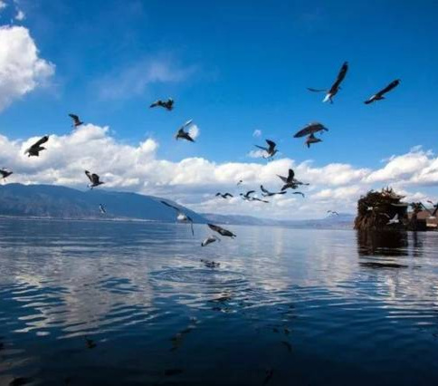
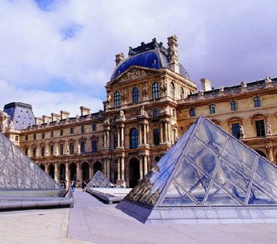
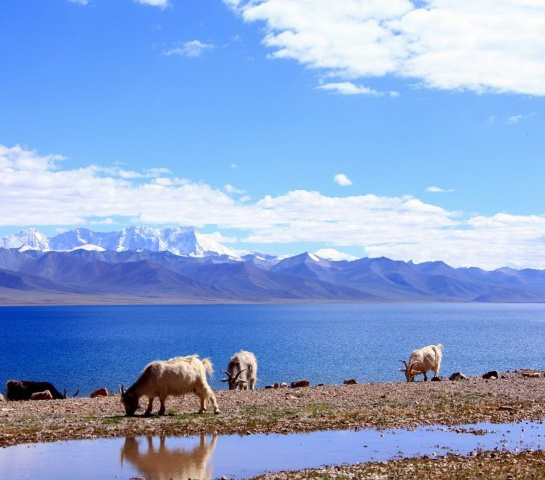
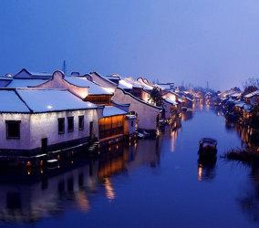
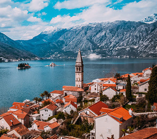
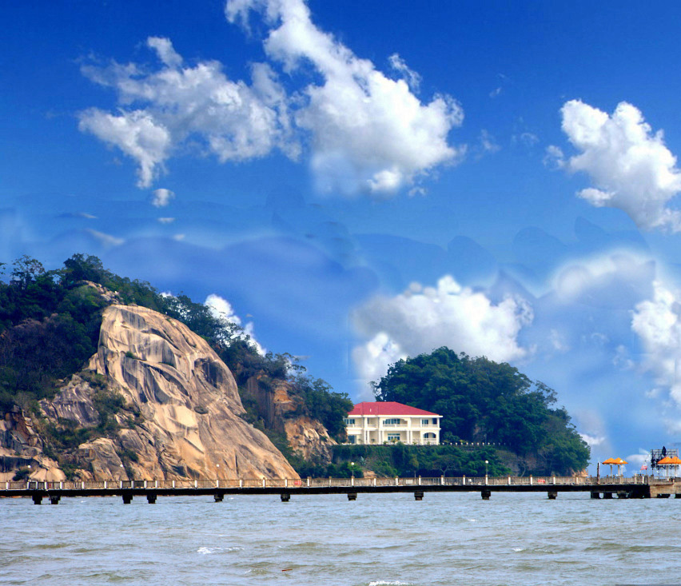
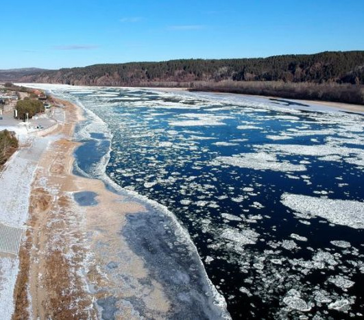

-

大理地处云南省西部，云贵高原上的洱海平原、苍山之麓、 洱海之滨， 是古代南诏国和大理国的都城。
-

巴黎位于法国北部巴黎盆地的中央，横跨塞纳河两岸,是法兰西共和国的首都和最大城市， 也是法国的政治、经济、文化和商业中心。
-

西藏以其雄伟壮观、神奇瑰丽的自然风光闻名。它地域辽阔、地貌壮观、资源丰富。
-

乌镇素有“中国最后的枕水人家”之誉，是典型的中国江南水乡古镇，有“鱼米之乡、 丝绸之府”之称。
-

塞尔维亚拥有很好的旅游基础，有各式各样风景秀丽的旅游景点，大量文化历史遗迹， 还有温泉，猎场等等大大小小的旅游设施。
-

青海有动物岩画和宗教岩画、悠扬的民歌“花儿”、奔放的藏族歌舞、 民间佛教绘塑“热贡艺术”，藏族卷轴画“唐卡艺术”，酥油花艺术。
-

鼓浪屿是个宁静美丽的小岛，这里有着各种风格迥异、中西合壁的建筑， 汇集了各种特色的食铺和商铺，充满了文艺范儿。
-

漠河是中国国内唯一能够观测北极光，体验极昼、极夜的地方，拥有中国最北、 龙江源头、神奇天象、圣诞世界、原始石林等垄断性旅游资源。